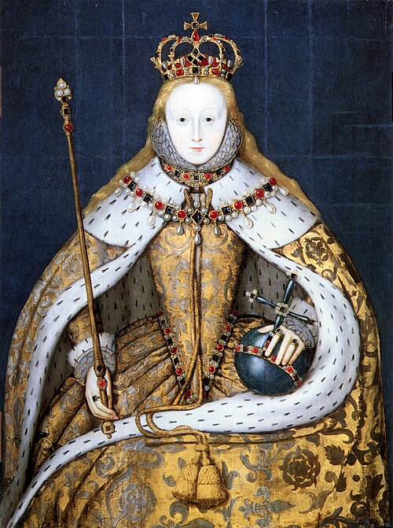
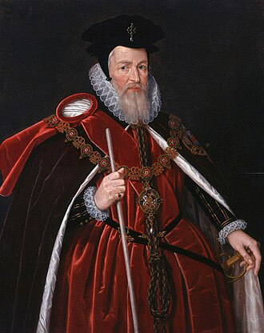
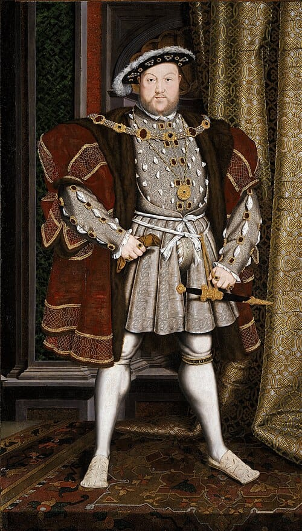
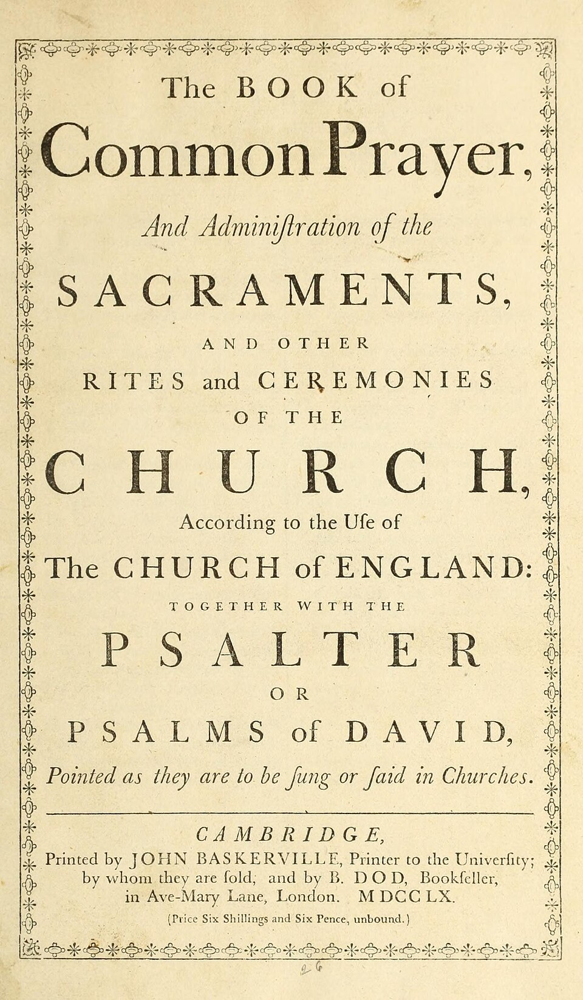
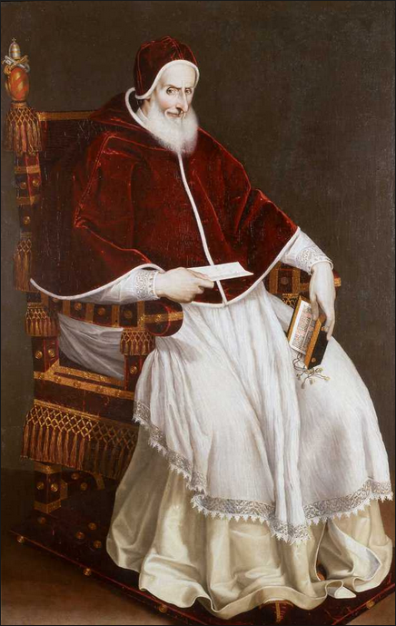
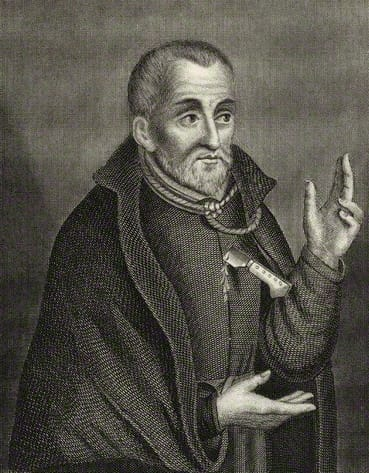
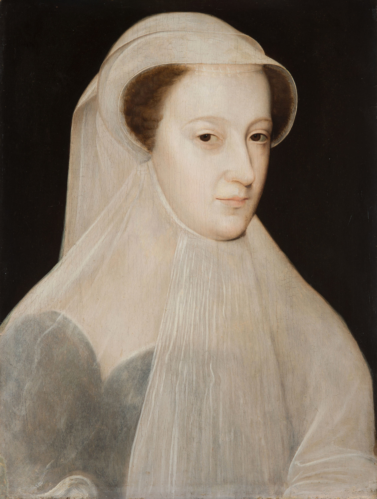
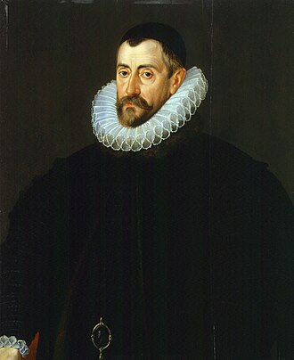

Key Topic 1: Queen, government and religion, 1558-69
Paper 2: Early Elizabethan England, 1558-88
Course Textbook
Enquiry: From religious division to the Armada: How did Elizabeth secure her throne?
Contents
|
Lesson 1: KT 1.1: The Situation on Elizabeth’s Accession, 1558
|
|
|
Lesson 2: KT 1.2: The 'Settlement' of Religion, 1559
|
|
|
Lesson 3: KT 1.3: Challenge to the Religious Settlement
|
|
|
Lesson 4: KT 1.4: The Problem of Mary, Queen of Scots, 1568–69
|
|
L1: KT 1.1: The Situation on Elizabeth’s Accession, 1558[[SRC_MARKER:L0_Start]]
Learning Objectives
Explain and evaluate Accession of Elizabeth I (17 NOV 1558): £300,000 Crown Debt, Antwerp Loans (14% Interest), Cecil Appointed Principal Secretary.
Explain and evaluate Features of Elizabethan Government (NOV–DEC 1558): 19-Man Privy Council, Monopolies & Royal Licences, Factional Balance at Court.
Explain and evaluate Challenges of Gender & Legitimacy (DEC 1558): Papal Rejection of Anne Boleyn, 1536 Succession Act Bar, Pressure to Produce Protestant Heir.
Explain and evaluate Parliament & Local Government (JAN–MAY 1559): Unpaid Justices of the Peace, Lords Lieutenant County Militias, Taxation Granted Solely by MPs.
Explain and evaluate Foreign Threats: France & Scotland (1558–1560): Loss of Calais (January 1558), Mary of Guise French Troops, Quartered English Royal Arms.
Recall & Retrieval
1. Which Tudor monarch was Elizabeth I’s father?
2. Who was Elizabeth I’s mother, executed in 1536?
3. Which Catholic queen preceded Elizabeth on the throne (1553–58)?
4. What religion was Queen Elizabeth I?
5. What ancient English possession in France was lost in January 1558?
6. Approximately how much Crown debt did Elizabeth inherit in 1558?
7. Who did Elizabeth appoint as her trusted Principal Secretary in 1558?
8. Which institution had the sole legal power to grant monarchical taxes?
9. Which unpaid local officials maintained law and order in counties?
10. Which northern kingdom was ruled by Mary of Guise in 1558?
Vocabulary Check
The Odd One Out: Circle ONE term that does not belong with the others. Explain your reasoning: What historical connection links the other terms, and why is your chosen term different?
Great Chain of Being | Patronage | Privy Council | Queen Regnant | Legitimacy | Debasement
Teacher Model / Pupil Reasoning:
[[SRC_MARKER:L0_Source_0]]
Source S1: Queen Elizabeth I Coronation Portrait (1559)

Queen Elizabeth I in her magnificent gold coronation robes, holding the orb and sceptre as symbols of monarchical authority and divine right, painted c. 1559.
[[SRC_MARKER:L0_Source_1]]
Source S2: Sir William Cecil, Lord Burghley, Elizabeth’s Chief Minister

Sir William Cecil (later Lord Burghley), appointed Elizabeth’s Principal Secretary on 17 November 1558, who managed government business and parliament for forty years.
[[SRC_MARKER:L0_Source_2]]
Source S3: Queen Elizabeth I Coronation Portrait (1559)
Queen Elizabeth I in her magnificent gold coronation robes, holding the orb and sceptre as symbols of monarchical authority and divine right, painted c. 1559.
Q1. How did Elizabeth use royal portraits like the Coronation Portrait to project divine authority and overcome early doubts about female rule?
[1.1] (Source A) In November 1558, twenty-five-year-old Elizabeth Tudor ascended the throne following the death of Mary I. She inherited an impoverished realm burdened by an astronomical £300,000 Crown debt, largely incurred through costly foreign wars in France.
[1.2] The Crown’s ordinary annual income stood at barely £286,000, forcing heavy borrowing from European financiers on the Antwerp Exchange at extortionate interest rates of 14 per cent. Seeking immediate stability, Elizabeth appointed her most trusted advisor, Sir William Cecil, as Principal Secretary on accession day, establishing a partnership that directed English governance for four decades.
[[SRC_MARKER:L0_Source_3]]
Source S4: Sir William Cecil, Lord Burghley, Elizabeth’s Chief Minister
Sir William Cecil (later Lord Burghley), appointed Elizabeth’s Principal Secretary on 17 November 1558, who managed government business and parliament for forty years.
Q2. Why did Elizabeth’s appointment of moderate, experienced advisers like William Cecil prove critical in stabilising her royal government in 1558?
[2.1] (Source B) Tudor monarchical governance was rooted in the concept of Divine Right, but the Crown possessed no standing army or professional police force. Sovereign power was instead maintained through an executive 19-man Privy Council comprising senior noblemen and statesmen meeting daily to guide defense, finance, and diplomacy.
[2.2] To bind the landed aristocracy and ambitious courtiers to her rule, Elizabeth deployed a sophisticated system of royal patronage, distributing titles, offices, leases, and lucrative commercial monopolies. By balancing rival political factions at court—most notably between the cautious William Cecil and her favourite, Lord Robert Dudley—the Queen prevented any single noble clique from dominating royal decision-making.
[3.1] Elizabeth’s right to rule was challenged by deep-seated sixteenth-century patriarchal prejudice and religious doubts over her legitimacy. Roman Catholic canon law regarded Henry VIII’s marriage to Anne Boleyn as illegal and bigamous, because Pope Clement VII had refused to annul Henry’s first marriage to Catherine of Aragon. Furthermore, following Anne’s execution in 1536, Parliament passed the Second Succession Act, legally declaring Elizabeth illegitimate.
[3.2] As an unmarried female ruler—a Queen Regnant—contemporary European society considered her inherently incapable of commanding military forces or governing without a husband. Consequently, both Parliament and the Privy Council exerted relentless pressure upon Elizabeth to marry and produce a Protestant heir, a dilemma she navigated by declaring herself married to the English realm.
[4.1] Beyond Whitehall, the Crown depended entirely on local authorities to execute royal policy across England's counties. County administration was overseen by Lords Lieutenant, wealthy magnates responsible for raising local militias during emergencies, and unpaid Justices of the Peace (JPs) drawn from the country gentry. These JPs enforced statutory law, collected taxes, repaired roads, and punished petty crime at quarterly sessions.
[4.2] Meanwhile, Parliament was an occasional advisory body called only when the monarch required extraordinary taxation (subsidies) or statute legislation. While MPs gathered only nine times during Elizabeth’s forty-five-year reign, parliamentary consent was constitutionally mandatory to authorize Crown taxes, granting the Commons significant financial leverage.
[5.1] In foreign affairs, England stood isolated and militarily encircled by Catholic powers. In January 1558, French forces had captured
Calais, England’s last continental possession held since 1347, stripping the realm of its vital trade gateway and strategic Channel outpost.
[5.2] The danger was compounded on the northern border by the historic
Auld Alliance between France and Scotland. Scotland was ruled by French Catholic regent
Mary of Guise, who stationed French garrisons on English borders, while her daughter
Mary, Queen of Scots, married to the French Dauphin, openly quartered the
English royal arms on her heraldic crest, asserting herself as the lawful monarch of England.
[[SRC_MARKER:L0_Task_4_0]]Q3. Master Disciplinary Enquiry Task
Pair & Share Activity
Q4. Discuss with your partner: What was Elizabeth's most urgent problem in 1558?
GCSE Exam Practice
Q5. Q1(a). Describe one key feature of the role of the Privy Council in 1558. [2 marks]
Q6. Q1(b). Describe one key feature of the financial weaknesses Elizabeth faced in 1558. [2 marks]
Q7. Q2. Explain why Elizabeth’s legitimacy was questioned when she became queen in 1558. [12 marks]
L2: KT 1.2: The 'Settlement' of Religion, 1559[[SRC_MARKER:L1_Start]]
Learning Objectives
Explain and evaluate Religious Divisions in 1558 (NOV 1558–JAN 1559): Conservative North & Western Gentry, Radical Returning Marian Exiles, Marian Bishops in Lords.
Explain and evaluate The Act of Supremacy (MAY 1559): ‘Supreme Governor’ Compromise Title, Compulsory Oath for Clergy, All Marian Bishops Deprived.
Explain and evaluate The Act of Uniformity (MAY 1559): Compulsory 1559 Prayer Book, One-Shilling Recusancy Fine, Deliberate Communion Ambiguity.
Explain and evaluate The Royal Injunctions (SUMMER 1559): Fifty-Seven Royal Directives, English Bible in Every Church, Pilgrimages & Fake Miracles Banned.
Explain and evaluate Enforcing the Settlement & Church Role (1559–1560s): 125 Visitation Commissioners, Parish Church Court Supervision, Four Hundred Clergy Resignations.
Recall & Retrieval
1. What title did Henry VIII claim over the Church of England in 1534?
2. What language was the Catholic Latin Mass spoken in?
3. What term describes Protestants who wanted to purify the Church of all Catholic practices?
4. What was the official fine for refusing to attend church under the 1559 Act of Uniformity?
5. What title did Elizabeth I adopt under the 1559 Act of Supremacy?
6. What English prayer book was made compulsory in all parish churches in 1559?
7. What official set of 57 instructions enforced the 1559 Settlement?
8. What was a Catholic called who refused to attend Anglican church services?
9. How many Marian Catholic bishops refused the Oath of Supremacy in 1559?
10. Who was appointed Elizabeth’s first Protestant Archbishop of Canterbury in 1559?
Vocabulary Check
The Golden Sentence: Choose TWO terms from the word bank. Write ONE grammatically sophisticated, historically accurate sentence connecting them using a causal conjunction (because, although, or consequently):
Act of Supremacy | Act of Uniformity | Royal Injunctions | Visitations | Puritan | Recusant
Teacher Model / Pupil Sentence:
[[SRC_MARKER:L1_Source_0]]
Source S1: The 1559 Act of Supremacy

The opening preamble of the 1559 Act of Supremacy passed by Parliament, declaring Queen Elizabeth I to be "Supreme Governor" rather than "Supreme Head" of the Church of England.
[[SRC_MARKER:L1_Source_1]]
Source S2: The 1559 Book of Common Prayer

Title page of the 1559 Book of Common Prayer, enforcing moderate Protestant liturgy and deliberately combining 1549 and 1552 communion wordings to appease traditional Catholics.
[1.1] Upon her accession, Elizabeth inherited a nation bitterly polarized by decades of religious upheaval. The northern and western shires—dominated by conservative Catholic noble families—remained deeply committed to traditional Latin worship and papal authority. Conversely, London and the southeastern ports had embraced radical Protestant Reformation doctrines, fuelled by merchant trade with Europe.
[1.2] The country was still scarred by the trauma of Mary I’s reign, during which nearly 300 Protestants were burned at the stake for heresy. Elizabeth sought to avoid European-style civil wars by formulating a pragmatic religious compromise—a "Middle Way" that would establish Protestant uniformity while placating moderate Catholic traditionalists.
[[SRC_MARKER:L1_Source_3]]
Source S3: The 1559 Act of Supremacy
The opening preamble of the 1559 Act of Supremacy passed by Parliament, declaring Queen Elizabeth I to be "Supreme Governor" rather than "Supreme Head" of the Church of England.
Q1. Why was the compromise title of "Supreme Governor" chosen instead of "Supreme Head" to reassure both Catholic traditionalists and Puritan reformers?
[2.1] (Source A) Passed by Parliament in May 1559, the Act of Supremacy re-established England’s formal break with the Papacy in Rome. In a deliberate political compromise to appease Catholics who held the Pope as the only earthly head of the Church, Elizabeth rejected Henry VIII’s title of 'Supreme Head' and assumed the title of Supreme Governor of the Church of England.
[2.2] All clergy, judges, and royal officials were legally mandated to swear the Oath of Supremacy, swearing allegiance to the Queen's spiritual leadership on pain of losing their offices and facing treason charges. To enforce compliance and punish clerical disobedience, the act established the Court of High Commission.
[3.1] The Act of Uniformity (May 1559) established a mandatory national framework for church worship across England. It enforced a single, standardized Book of Common Prayer written in English, blending Protestant theology with ambiguous wording regarding the Eucharist to allow Catholics to interpret communion in their own way.
[3.2] Attendance at Anglican parish church services on Sundays and holy days was made compulsory; those who refused were labelled recusants and fined one shilling (12d) per missed service. However, under the controversial Ornaments Rubric, church decorations and traditional clerical vestments from the 1548 Edwardian Reformation were retained, provoking immediate outrage among radical Puritans.
[[SRC_MARKER:L1_Source_5]]
Source S4: The 1559 Book of Common Prayer
Title page of the 1559 Book of Common Prayer, enforcing moderate Protestant liturgy and deliberately combining 1549 and 1552 communion wordings to appease traditional Catholics.
Q2. How did the deliberate ambiguity of the 1559 Prayer Book reflect Elizabeth’s desire "not to make windows into men’s souls"?
[4.1] (Source B) In the summer of 1559, William Cecil issued 57 Royal Injunctions to provide precise administrative instructions for the day-to-day enforcement of the religious settlement. Clergy were instructed to preach royal supremacy at least once every quarter and report anyone praising foreign papal jurisdiction. Every parish church was legally mandated to purchase an English Bible accessible to all parishioners.
[4.2] To eradicate traditional Catholic idolatry, pilgrimages, fake miracles, and candle-burning before images were strictly prohibited. Furthermore, clerical marriage was tightly regulated, requiring prospective brides to be vetted and approved by two Justices of the Peace and the local bishop.
[5.1] The Elizabethan regime dispatched royal commissioners on nationwide
Visitations in 1559 to inspect parish churches and administer the Oath of Supremacy. While roughly
400 clergy resigned or were deprived of their livings, the vast majority of ordinary parish priests accepted the settlement to retain their livelihoods.
[5.2] However, the senior Catholic hierarchy refused to compromise: all Marian bishops except one rejected the Oath and were dismissed, allowing Elizabeth to appoint loyal Protestant reformers to key bishoprics. The
Church of England served as an essential engine of royal authority, utilizing churchwardens and ecclesiastical courts to supervise community morals, distribute poor relief, and reinforce state loyalty from the pulpit.
[[SRC_MARKER:L1_Task_4_0]]Q3. Master Disciplinary Enquiry Task
Pair & Share Activity
Q4. Discuss with your partner: Did the 1559 Religious Settlement actually solve the religious crisis?
GCSE Exam Practice
Q5. Q1(a). Describe one key feature of the Act of Supremacy (1559). [2 marks]
Q6. Q1(b). Describe one key feature of the Royal Injunctions (1559). [2 marks]
Q7. Q3. “The Religious Settlement was successful in resolving religious divisions in England in 1559.” How far do you agree? Explain your answer. [16 marks + 4 marks SPaG]
L3: KT 1.3: Challenge to the Religious Settlement[[SRC_MARKER:L2_Start]]
Learning Objectives
Explain and evaluate The Nature of the Puritan Challenge (1559–1563): Geneva Calvinist Influence, Demand to Abolish Holy Days, Threat to Royal Prerogative.
Explain and evaluate The Crucifix & Vestments Controversy (1566): Parker’s Book of Advertisements, White Linen Surplice Requirement, Thirty-Seven London Priests Sacked.
Explain and evaluate The Catholic Challenge at Home (1559–1568): Church Papists Attending Services, Lax Local JPs in North, Tolerant ‘Windows Into Men’s Souls’.
Explain and evaluate Foreign Threats: France & The Netherlands (1562–1568): French Wars of Religion (1562), 10,000 Spanish Troops under Alba, Council of Troubles Brutality.
Explain and evaluate Escalating Tensions: The Genoese Loan (1568–1569): £85,000 Italian Bullion Storm Shelter, Queen Claims Italian Bank Loan, Alba Imposes English Trade Embargo.
Recall & Retrieval
1. What Latin term means "the middle way", describing Elizabeth’s settlement?
2. Which white linen robe did Puritans refuse to wear during church services?
3. Which Archbishop of Canterbury issued the 1566 Book of Advertisements?
4. How many London priests were dismissed in 1566 for refusing to wear vestments?
5. What object did Elizabeth place in the Royal Chapel that outraged Puritans?
6. What Catholic movement aimed to stamp out Protestantism across Europe?
7. Which Catholic king ruled Spain, the Netherlands, and the Spanish Empire?
8. What region of England was most heavily Catholic in the 1560s?
9. What council of Catholic clergy (1545–63) reaffirmed Catholic doctrines?
10. Did King Philip II of Spain immediately attack Elizabeth in 1559?
Vocabulary Check
Conceptual Classification: Categorise the terms from the word bank into the two historical boxes below:
Papal Bull | Excommunication | Counter-Reformation | Seminary | Crucifix Controversy | Vestment Controversy
Power, Governance & Warfare
Economy, Trade & Society
[[SRC_MARKER:L2_Source_0]]
Source S1: Papal Bull Regnans in Excelsis Excommunicating Elizabeth (1570)

Pope Pius V, who issued the papal bull Regnans in Excelsis on 25 February 1570, excommunicating Queen Elizabeth I as a "pretended queen" and releasing English Catholics from their allegiance.
[[SRC_MARKER:L2_Source_1]]
Source S2: Father Edmund Campion SJ, Catholic Jesuit Martyr (1581)

Father Edmund Campion SJ, the brilliant English Jesuit missionary who secretly ministered to Catholic households before being arrested and executed for treason at Tyburn in 1581.
[1.1] The religious settlement was immediately contested by zealous English Protestants known as Puritans. Having fled England to escape Mary I's burnings, these Marian Exiles returned from Geneva and Zurich deeply influenced by John Calvin's radical theology. They demanded that the Church of England be completely purified of all remaining "popish dregs" and Catholic superstitions.
[1.2] Puritans fiercely objected to traditional church hierarchy, particularly the authority of bishops, with radical Presbyterians demanding a democratic church governed by local elders. They rejected kneeling to receive communion, the use of wedding rings, and music in church, arguing that only practices explicitly authorized in scripture were permissible.
[[SRC_MARKER:L2_Source_3]]
Source S3: Papal Bull Regnans in Excelsis Excommunicating Elizabeth (1570)
Pope Pius V, who issued the papal bull Regnans in Excelsis on 25 February 1570, excommunicating Queen Elizabeth I as a "pretended queen" and releasing English Catholics from their allegiance.
Q1. Why did Pope Pius V’s papal bull in 1570 make it impossible for English Catholics to remain loyal to both their church and their queen?
[2.1] (Source A) Clashes between Elizabeth and Puritan reformers erupted over church visuals and clerical dress. Elizabeth insisted on retaining a silver crucifix in her Royal Chapel, provoking threats of resignation from newly appointed Puritan bishops who viewed crucifixes as idol worship; Elizabeth eventually compromised by removing the chapel cross. A more serious confrontation unfolded over clerical attire in 1566.
[2.2] Radical Puritans refused to wear the traditional white linen surplice, denouncing it as the livery of the Antichrist. In response, Archbishop of Canterbury Matthew Parker issued the Book of Advertisements (1566), mandating uniform clerical dress. When 110 London ministers were summoned to Lambeth Palace to demonstrate compliance, 37 ministers refused and were deprived of their pulpits.
[[SRC_MARKER:L2_Source_4]]
Source S4: Father Edmund Campion SJ, Catholic Jesuit Martyr (1581)
Father Edmund Campion SJ, the brilliant English Jesuit missionary who secretly ministered to Catholic households before being arrested and executed for treason at Tyburn in 1581.
Q2. Why did the Elizabethan government treat Jesuit missionaries like Edmund Campion as political traitors rather than religious dissidents?
[3.1] (Source B) Domestic Catholic opposition was widespread but initially cautious. In the conservative northern counties and Lancashire, powerful magnates such as the Earls of Northumberland and Westmorland quietly sheltered Catholic priests.
[3.2] Many wealthy families became "Church Papists", attending Anglican Sunday services to pay lip service to the law and avoid fines, while secretly attending Latin Mass in private household chapels. Because Elizabeth declared she had no desire to "make windows into men's souls", early enforcement was deliberately lenient: the one-shilling recusancy fines were rarely collected systematically from the gentry, and Pope Pius IV refrained from instructing English Catholics to actively rebel during the first decade of her reign.
[4.1] England's geopolitical security deteriorated dramatically in the 1560s as European religious conflicts intensified. In 1562, civil warfare erupted between Catholics and Huguenots in the French Wars of Religion, removing France as an immediate invasion threat but alarming England by demonstrating how religion could rip a kingdom apart. Far more dangerous was the situation across the English Channel in the Spanish Netherlands.
[4.2] In 1566, Dutch Calvinists launched iconoclastic riots against Spanish rule. King Philip II responded in 1567 by dispatching the ruthless Duke of Alba with an elite force of 10,000 Spanish troops to crush the rebellion. Alba's presence on the Channel coast placed a formidable Catholic army within striking distance of England.
[5.1] Anglo-Spanish relations reached a breaking point in the winter of 1568 over the
Genoese Loan. Four Spanish transport ships carrying
400,000 florins (gold and silver) to pay Alba's soldiers in the Netherlands were chased by French privateers and forced to seek shelter in Southampton and Plymouth.
[5.2] Discovering that the bullion belonged to Genoese bankers and had not yet been formally transferred to Spain, William Cecil advised Elizabeth to confiscate the entire treasure and take over the loan herself. Furious at this act of piracy, Alba seized all English merchant ships and goods in Antwerp, and Philip II imposed a total
trade embargo on English cloth, plunging the London mercantile community into economic depression and pushing both nations toward open hostility.
[[SRC_MARKER:L2_Task_4_0]]Q3. Master Disciplinary Enquiry Task
Pair & Share Activity
Q4. Discuss with your partner: Were the Puritans a serious threat to Elizabeth's rule?
GCSE Exam Practice
Q5. Q1(a). Describe one key feature of the Puritan challenge to the Religious Settlement. [2 marks]
Q6. Q1(b). Describe one key feature of the Papal Bull (Regnans in Excelsis) in 1570. [2 marks]
Q7. Q2. Explain why Puritans challenged the Religious Settlement in the 1560s. [12 marks]
L4: KT 1.4: The Problem of Mary, Queen of Scots, 1568–69[[SRC_MARKER:L3_Start]]
Learning Objectives
Explain and evaluate Mary’s Claim to the English Throne (1560–1565): Margaret Tudor Granddaughter Lineage, Marriage to Henry Lord Darnley, Legitimate Catholic Figurehead.
Explain and evaluate The Murder of Lord Darnley (FEB 1567): Kirk o’ Field Gunpowder Explosion, Marriage to Earl of Bothwell, Scottish Protestant Rebellion.
Explain and evaluate Abdication, Lochleven & Escape (1567–1568): Forced Abdication for Infant James VI, Fishing Boat Crossing to Workington, Anointed Monarch Under House Arrest.
Explain and evaluate The Inquiry at York & Casket Letters (1568–1569): Eight French Casket Love Letters, Refusal of Direct Cross-Examination, No Verdict Justifies Detention.
Explain and evaluate Mary’s Imprisonment in England (1569): Guarded by Earl of Shrewsbury, Duke of Norfolk Court Marriage Plot, Magnet for Northern Catholic Discontent.
Recall & Retrieval
1. Who was Mary, Queen of Scots’ first husband, King of France?
2. Which grandmother gave Mary Stuart a legitimate claim to the English throne?
3. What religion was Mary, Queen of Scots?
4. Who was Mary’s second husband, found strangled after Kirk o’Field exploded in 1567?
5. Whom did Mary marry shortly after Darnley’s suspicious death?
6. In what year did Mary Stuart flee across the border into England?
7. In what northern castle was Mary first held under armed house arrest?
8. What alleged love letters were presented to prove Mary murdered Darnley?
9. Did Elizabeth formally find Mary guilty of murder at the York Inquiry in 1568–69?
10. Which powerful Catholic noble family in France was Mary closely related to?
Vocabulary Check
Spot the Deliberate Error: Read the statement below. One historical fact or vocabulary concept has been deliberately falsified. Underline the error and explain the accurate historical reality below:
Abdicate | Divine Right of Kings | Conference of York | Casket Letters | Heir Presumptive | Lord Darnley
"At the Conference of York, Elizabeth I officially confirmed Mary, Queen of Scots as her legitimate Heir Presumptive because the Casket Letters proved Mary was innocent of murdering Lord Darnley."
Teacher Model / Historical Correction:
[[SRC_MARKER:L3_Source_0]]
Source S1: Mary, Queen of Scots (c. 1565)

Mary Stuart, Queen of Scots, great-granddaughter of Henry VII, whose strong dynastic claim and Catholic faith made her a continuous focal point for Catholic rebellion in England.
[[SRC_MARKER:L3_Source_1]]
Source S2: Sir Francis Walsingham, Queen Elizabeth’s Spymaster

Sir Francis Walsingham, Elizabeth’s Principal Secretary and spymaster, who built an extensive network of codebreakers and double agents to intercept correspondence between Mary and Catholic plotters.
[[SRC_MARKER:L3_Source_2]]
Source S3: Mary, Queen of Scots (c. 1565)
Mary Stuart, Queen of Scots, great-granddaughter of Henry VII, whose strong dynastic claim and Catholic faith made her a continuous focal point for Catholic rebellion in England.
Q1. Why did Mary, Queen of Scots’ arrival in England in 1568 present Elizabeth with an impossible political and legal dilemma?
[1.1] (Source A) Mary, Queen of Scots, represented an existential dynastic challenge to Elizabeth I. As the granddaughter of Henry VIII's elder sister Margaret Tudor, Mary held an unassailable hereditary claim to the English crown, and Roman Catholics regarded her as the legitimate rightful sovereign. Following the death of her French husband King Francis II in 1560, Mary returned to rule Presbyterian Scotland.
[1.2] In July 1565, Mary dramatically strengthened her dynastic position by marrying her Catholic cousin, Henry Stuart, Lord Darnley, who was also a Tudor descendant. This union united the two strongest Catholic claims to the English throne, stoking intense panic in Whitehall about the succession.
[2.1] Mary’s reign in Scotland quickly unraveled through marital discord and scandal. Darnley was arrogant, violent, and jealous of Mary's Italian private secretary, David Rizzio, whom Darnley and Protestant lords murdered in Mary's presence at Holyrood Palace in 1566. Marital relations collapsed completely.
[2.2] In the early hours of 10 February 1567, the house at Kirk o' Field where Darnley was recuperating from smallpox was destroyed in a massive gunpowder explosion; Darnley’s body was discovered strangled in an adjoining orchard. Public suspicion immediately fell upon the ambitious Earl of Bothwell, whom Mary shockingly married in May 1567 under Protestant rites, provoking outrage across Scotland and Europe.
[3.1] Scottish Protestant lords rose in armed rebellion against Mary and Bothwell, confronting the Queen's forces at Carberry Hill in June 1567. Abandoned by her troops, Mary surrendered while Bothwell fled into exile.
[3.2] Imprisoned in the island fortress of Lochleven Castle, Mary was subjected to intense intimidation and forced on 24 July 1567 to sign deeds of abdication in favour of her one-year-old infant son, who was crowned King James VI, with Protestant Earl of Moray ruling as regent. However, with the aid of loyal supporters, Mary made a daring escape from Lochleven in May 1568, raised a 6,000-man army, but suffered decisive military defeat at the Battle of Langside.
[[SRC_MARKER:L3_Source_5]]
Source S4: Sir Francis Walsingham, Queen Elizabeth’s Spymaster
Sir Francis Walsingham, Elizabeth’s Principal Secretary and spymaster, who built an extensive network of codebreakers and double agents to intercept correspondence between Mary and Catholic plotters.
Q2. Why was Francis Walsingham so determined to convince a reluctant Elizabeth to place Mary, Queen of Scots on trial for high treason?
[4.1] (Source B) Fleeing Scotland, Mary crossed the Solway Firth in an open fishing boat, landing at Workington in Cumberland on 16 May 1568. Her arrival in England plunged Elizabeth into a severe constitutional dilemma: executing or restoring Mary would provoke foreign intervention, yet releasing her would provide English Catholics with an inspiring leader. To buy time, Elizabeth convened an official inquiry at York and Westminster (1568–69) to investigate Darnley’s murder.
[4.2] The Scottish Regent Moray produced eight love letters and sonnets—the controversial Casket Letters—allegedly proving Mary's complicity in Darnley's death. Unwilling to declare a fellow anointed queen guilty of murder, Elizabeth concluded with a deliberate "not proven" verdict, keeping Mary detained in legal limbo.
[5.1] With the inquiry concluded, Mary was placed under honourable confinement in remote aristocratic estates, principally under the custody of
George Talbot, Earl of Shrewsbury, at
Tutbury Castle and Sheffield Manor. While Elizabeth sought to treat her cousin with royal dignity, Mary’s presence on English soil acted as a permanent catalyst for domestic Catholic conspiracy.
[5.2] William Cecil warned that Mary was a dangerous internal "Trojan horse" around whom disaffected northern magnates and foreign Catholic powers would inevitably coalesce. By the autumn of 1569, Mary had become the focal point of a treasonous conspiracy that would erupt into the Revolt of the Northern Earls.
[[SRC_MARKER:L3_Task_4_0]]Q3. Master Disciplinary Enquiry Task
Pair & Share Activity
Q4. Discuss with your partner: Why was Mary, Queen of Scots, such a unique problem for Elizabeth?
GCSE Exam Practice
Q5. Q1(a). Describe one key feature of Mary, Queen of Scots' claim to the English throne. [2 marks]
Q6. Q1(b). Describe one key feature of the Casket Letters affair (1568–69). [2 marks]
Q7. Q3. “The arrival of Mary, Queen of Scots in England in 1568 was the main cause of instability in England in the years 1568–69.” How far do you agree? Explain your answer. [16 marks + 4 marks SPaG]
Generated: 2026-10-19 15:36:42 UTC | Unit: eee